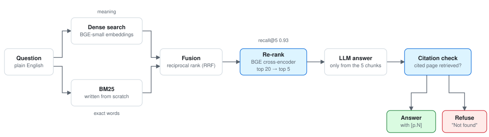

0.82 → 0.93recall@5 on a 50-question eval
Three of seven retrieval changes made it worse.
Question answering over the Reserve Bank of India's 107-page Master Direction on KYC. It cites the clause behind every answer and refuses questions the document can't answer. Retrieval combines dense embeddings with a BM25 index I wrote myself, merges the two with reciprocal rank fusion, then re-ranks with a cross-encoder. No LangChain.
The three runs that made retrieval worse were splitting the text by clause, twice, and a re-ranker trained on web search. They stay in the experiment log.
In the first 21 generated answers, all 14 citations pointed to pages that had been retrieved, and all three out-of-scope questions were refused.

keptrevertedfinal
Table
| Run | Recall@5 | |
|---|---|---|
| Dense | 0.82 | kept |
| BM25 | 0.84 | kept |
| Hybrid RRF | 0.91 | kept |
| Clause chunks | 0.77 | reverted |
| Clause +hybrid | 0.82 | reverted |
| Rerank ms-marco | 0.84 | reverted |
| Rerank BGE | 0.93 | kept |